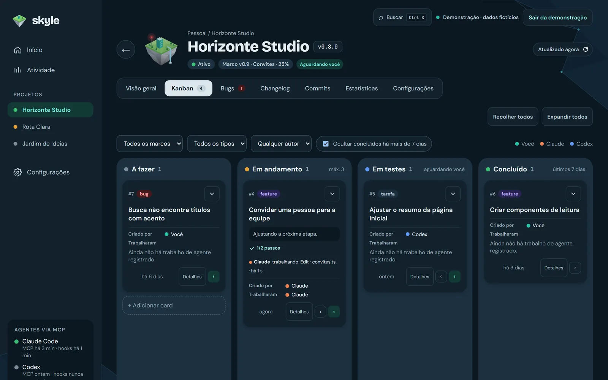
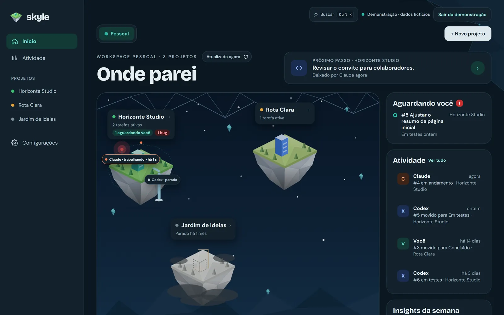
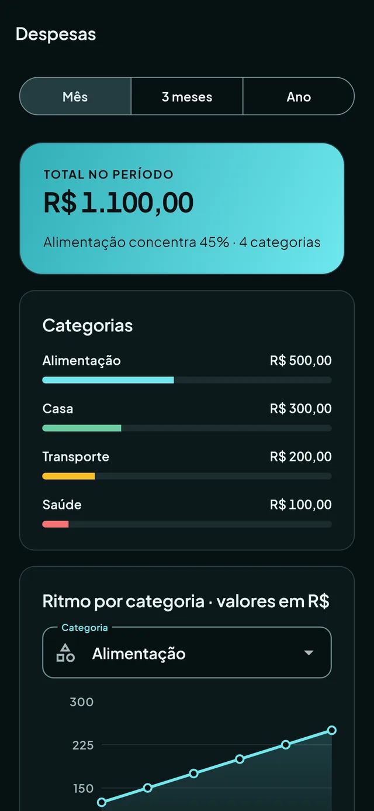
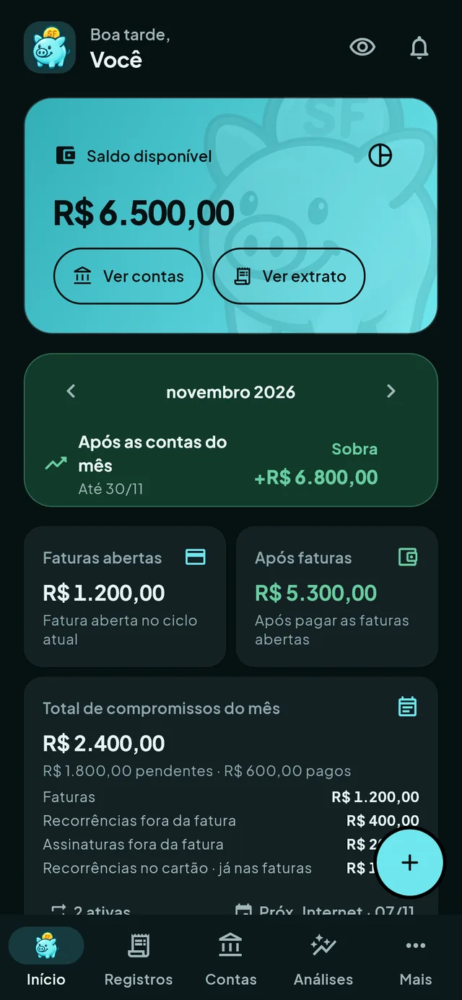
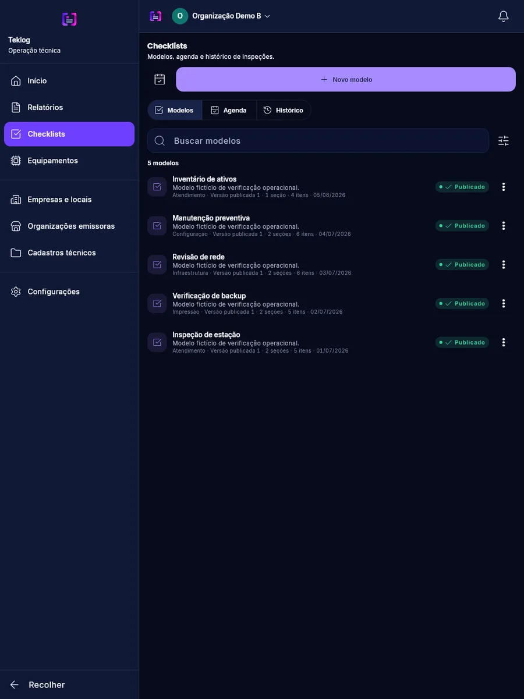
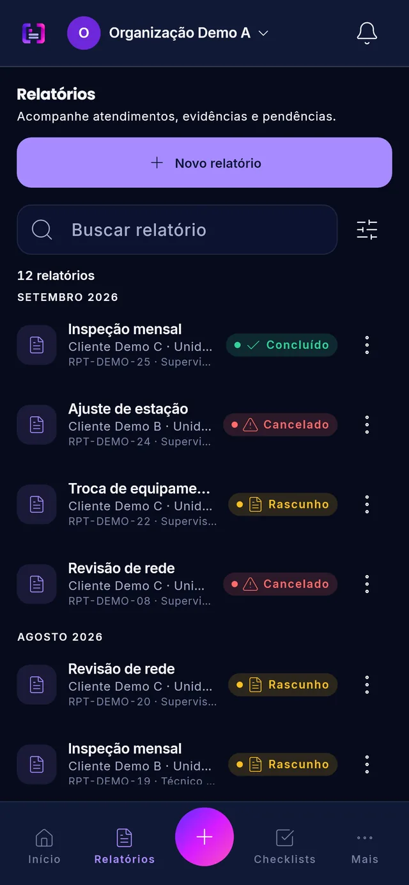

Software, automações, IA, web design e manutenção de computadores para empresas e pessoas. Atendimento presencial em Lapa – PR e remoto para todo o Brasil.
Painel local e auto-hospedado para acompanhar projetos, tarefas e o trabalho de agentes de IA: visão em arquipélago, kanban, registro de bugs, atividades e busca por Ctrl+K. Os agentes atualizam tudo por um servidor MCP.
Status: em desenvolvimento · Versão: 0.11.0 · Licença: MIT
React 19
FastAPI
MCP
SQLite
Docker

skyle · local

02


Projeto 02 de 03 · App de finanças pessoais
SimpliFinance
Finanças sob controle, no seu ritmo
Receitas, despesas, contas, cartões, faturas e parcelas num só app, sem confundir uma compra no cartão com uma saída de caixa. Análises por período, categoria e responsável, com os dados guardados no próprio aparelho.
Plataforma: app mobile · Versão: 1.10.0 · Dados: locais
Flutter
Riverpod
SQLite
fl_chart
Importação OFX
03
Projeto 03 de 03 · Serviços técnicos offline-first
Teklog
Atendimentos registrados, mesmo sem internet
Relatórios técnicos com vários atendimentos por local, custos e mídias, checklists com modelos versionados e PDF gerado no próprio aparelho com a identidade da organização. Feito para equipes de TI e técnicos autônomos trabalharem sem conexão.
Status: em desenvolvimento · Versão: 0.2.0 · Offline-first
Flutter
Riverpod
GoRouter
Drift / SQLite
PDF local


Sobre
Soluções completas,não só código.
Sou Vinicius Muller Stawicki, profissional de TI com atuação em infraestrutura, desenvolvimento de software, DevOps, automação e segurança da informação.
Trabalho com ambientes corporativos — Windows Server, Active Directory, Microsoft 365, Linux, Docker e Kubernetes — e desenvolvo com Flutter, Python, Django e React. Meu foco é entregar soluções organizadas, de qualidade e prontas para crescer.
Infraestrutura
DevOps
Segurança
Lapa – PR
Como trabalho
01
Diagnóstico
Entendo o problema e o que realmente precisa ser resolvido.
02
Planejamento
Escopo, etapas e arquitetura definidos antes de começar.
03
Construção
Entregas parciais, versionadas e testadas para você acompanhar.
04
Entrega
Publicação segura, com histórico de versões documentado.